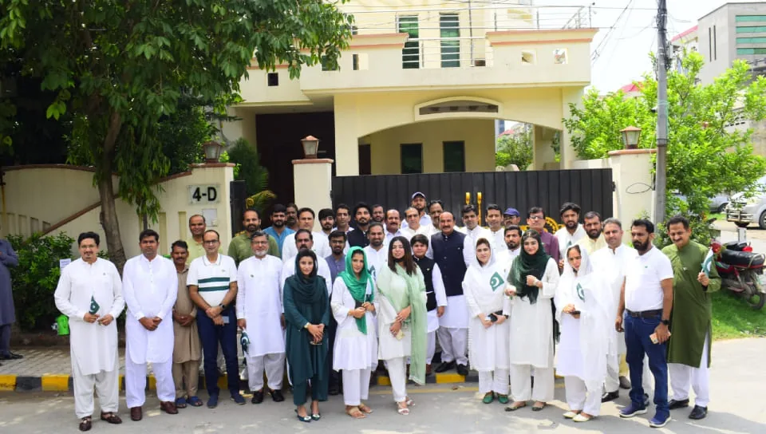
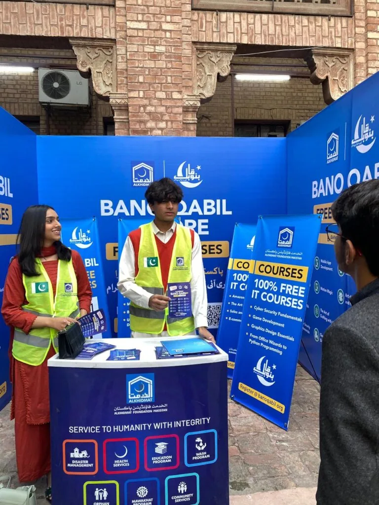
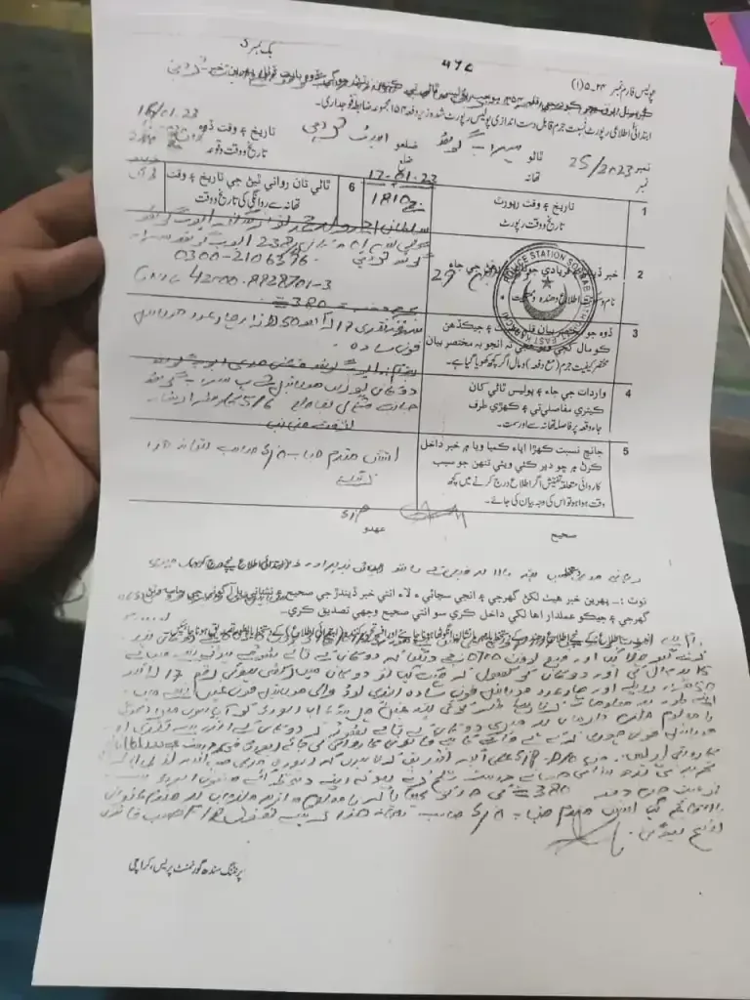
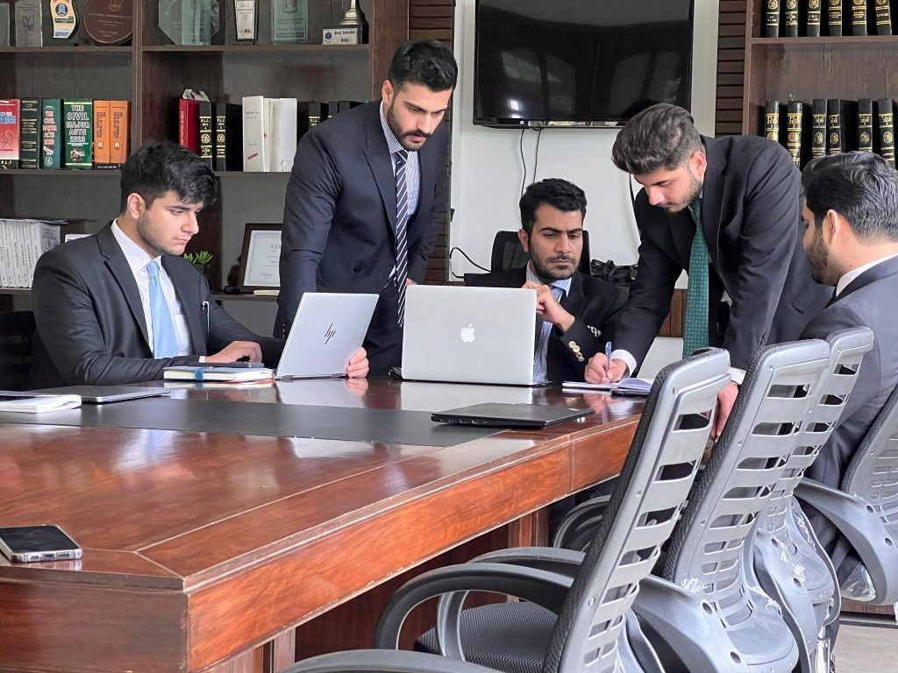

Pakistan ka qanoon aasan alfaz mein: rozana legal sawal jawab, court citations, legal news aur step by step guides, har post verified reference ke sath. Company, NGO aur trust registration se lekar FIR, virasat aur consumer court tak, sab kuch ek jagah.
Har service ke liye mukammal guide aur documentation assistance: process, zaroori documents aur official references ke sath.
Private limited company ki online registration, step by step.

Sindh aur Pakistan bhar mein NGO registration ka pura process.
Sindh Trusts Act 2020 ke tehat trust ki registration.

Charitable foundation ke liye registration assistance.
FBR Iris par NTN aur tax enrollment, individuals aur companies ke liye.
Brand name, logo aur slogan ke exclusive rights ke liye IPO filing.
Sale, gift, lease aur rent documents ki professional preparation.

Power of attorney aur legal agreements ki drafting assistance.
Rozana naye sawal jawab, legal news aur practical guides, har ek verified qanooni reference ke sath.
Sections 173, 345 and 561-A CrPC: cancellation, compromise aur quashing ke asal routes.
Legal NewsIslamabad High Court ka hukm aur Police Order 2002 ki dafa 7(3) ka pas-e-manzar.
Practical GuidePehle written notice, phir claim: Punjab aur Sindh consumer laws ke tehat pura tareeqa.
Practical GuideWirasat ke liye NADRA succession facilitation ka step by step process.
Legal Q&AQuran 4:11, Shariat Act 1937 aur section 498-A PPC ki roshni mein wazahat.
Legal Q&ADishonoured cheque par criminal remedy, notice aur limitation ka mukammal jawab.
Supreme Court aur High Courts ke aham faislay, proper citations (SCMR, PLD, YLR) aur mukammal references ke sath, taake koi bhi faisla ghalat hawale se na mile.
Taqi Kazmi ek LLB student aur legal education creator hain jo Karachi se Pakistan ke qanoon ko aasan alfaz mein aam logon tak pohnchate hain. Ye website sirf maloomat aur documentation guidance ke liye hai. Court cases aur wakeel ki khidmat ke liye Karachi Legal House ke enrolled advocates se rabta karwaya jata hai.

Nahi. Yahan ki tamam maloomat sirf taleemi maqsad ke liye hai, har post verified reference ke sath. Apne case ke liye enrolled advocate se mashwara zaroor karein. Wakeel ki khidmat ke liye Karachi Legal House ke advocates se rabta karwaya jata hai.
Har service ka apna page hai jahan process, zaroori documents aur official source links diye gaye hain. Services section se apni service chunein.
Ji, har citation aur guide official sources aur law reports se verify karke likha jata hai. Jahan official link mojood ho woh bhi sath diya jata hai.
Documentation guidance aur maloomat ke liye WhatsApp par message karein.
WhatsApp: 0311-2610683